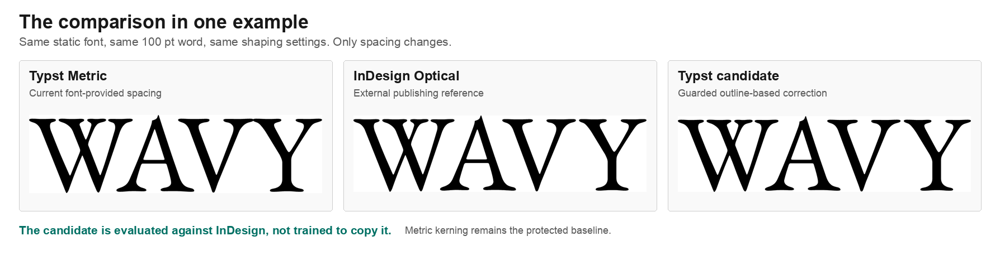
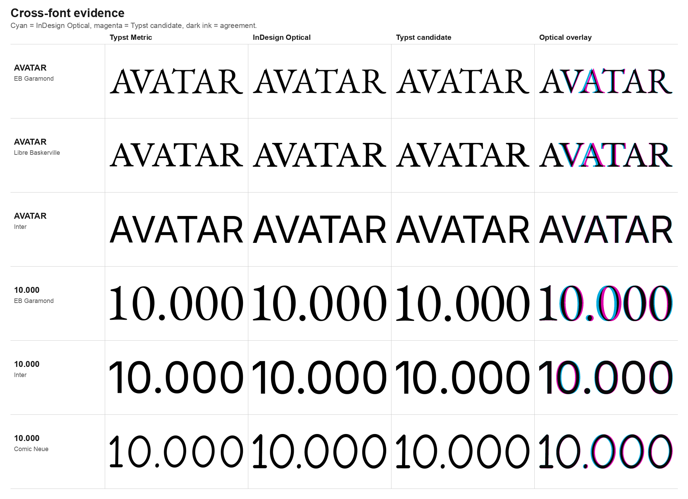
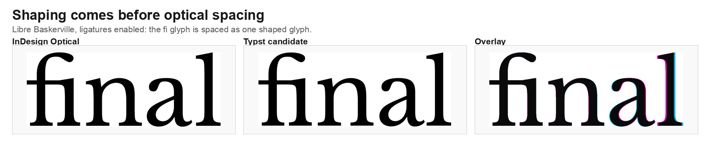

Metric
The type designer's spacing remains authoritative. This should stay the default and is usually the right choice for a well-made font used as intended.
Independent research workbench
This project tests whether a deterministic algorithm can improve display-text spacing when a font's built-in kerning is missing, sparse, or visually weak, without throwing away good font spacing.
Typst is an open-source, markup-based typesetting system for documents and presentations. It currently exposes kerning as an on/off text option; this workbench investigates a possible opt-in optical mode.
Current answer
Yes, for the current Latin display-text corpus, the
guarded-profile-hybrid candidate follows InDesign
Optical closely enough to justify a focused Typst compiler
prototype.
Across 61 measured cases, its combined mean rendered difference
from InDesign Optical is 0.0146em; the worst current
case is 0.0304em. This is evidence for a technical
direction, not proof of universal typographic quality.

Kerning changes the horizontal space between neighboring shaped glyphs. In metric kerning, the layout engine follows spacing and positioning data supplied by the font and shaping system. In optical kerning, the actual glyph shapes are also examined so visually uneven gaps can be corrected.
The type designer's spacing remains authoritative. This should stay the default and is usually the right choice for a well-made font used as intended.
A computed alternative for visible spacing problems, especially large titles, acronyms, display type, weak kern data, mixed shapes, and fonts used outside their intended size.
Large poster and presentation titles expose these problems quickly:
a gap such as W|A, A|V, o|T,
or 1|0 can look too open or too tight even when the
numeric advances are valid. Manual tracking fixes one line, but it
does not provide a reusable document-level behavior.
Context: Practical Typography's critical comparison of metric and optical spacing. This benchmark follows its central caution: optical is an option for a problem case, not a replacement for good font metrics.
InDesign Optical is the external publishing reference in this workbench because designers already know it and use it in production. The goal is not to reverse-engineer Adobe or declare its output to be ground truth. It gives reviewers a real, inspectable answer to “compared with what?”
Every optical comparison first passes a metric-parity gate: Typst and InDesign must use the same static font instance, text, size, ligature setting, and closely matching metric output. Only then is the InDesign Optical result compared with the Typst candidate.

Inspect the full method in the InDesign baseline specification and metric-parity gate.
The result of this work is an actual algorithm candidate named
guarded-profile-hybrid. It was not chosen upfront. The
benchmark first tested nearest-contour distance, whitespace profiles,
area balance, metric-prior blending, and conservative fallback
behavior. Their failures led to the guarded hybrid.
em.
fi becomes one
glyph, the algorithm spaces that glyph against its neighbors; it
does not insert kerning inside the ligature.
Read the algorithm and candidate-selection notes or the technical evaluation.
| Current suite | Measured cases | Mean difference | Worst difference |
|---|---|---|---|
| No ligatures | 30 / 30 | 0.0170em |
0.0304em |
| Ligatures enabled | 31 / 31 | 0.0123em |
0.0240em |
| Combined | 61 / 61 | 0.0146em |
0.0304em |
These scores measure rendered position and width differences against InDesign Optical. They make regressions visible; they do not replace visual review or prove that InDesign is always preferable.
There is an active upstream discussion in Typst issue #8514, but no assigned implementation or accepted API shape. The current repository is not a merge-ready patch. Its job is to make the algorithmic direction and its tradeoffs concrete.
1 · Complete
Reproducible fonts, shaping, algorithms, InDesign baselines, visual sheets, metrics, and regression cases.
2 · Current
Agree on scope, complexity budget, fallback semantics, and how advance widths, legacy kern, and GPOS interact.
3 · Proposed
Extract the smallest runtime kernel from the research code, place it after shaping, keep it opt-in, and add caches.
4 · Before PR
Measure compiler cost, expand scripts and font classes, lock compatibility tests, and only then propose a focused PR.
The exact API remains open. A deliberately small sketch is to preserve the current boolean behavior and add an optical mode rather than prematurely renaming every metric source:
#set text(kerning: true) // current behavior
#set text(kerning: false) // current disabled behavior
// Possible future direction, subject to upstream design:
#set text(kerning: "optical")The technical milestones, open decisions, and useful community contributions are listed in Path to a Typst Prototype.
crates/optikern-coreFont loading, shaping, outline profiles, algorithm candidates, guards, and tests.
scripts/Typst and InDesign runs, parity gates, comparison suites, and reproducible figure generation.
corpus/ and baselines/Pinned font definitions, sample matrices, compact current evidence, and regression inputs.
docs/Algorithm rationale, rendering contracts, current findings, research sources, and the upstream path.